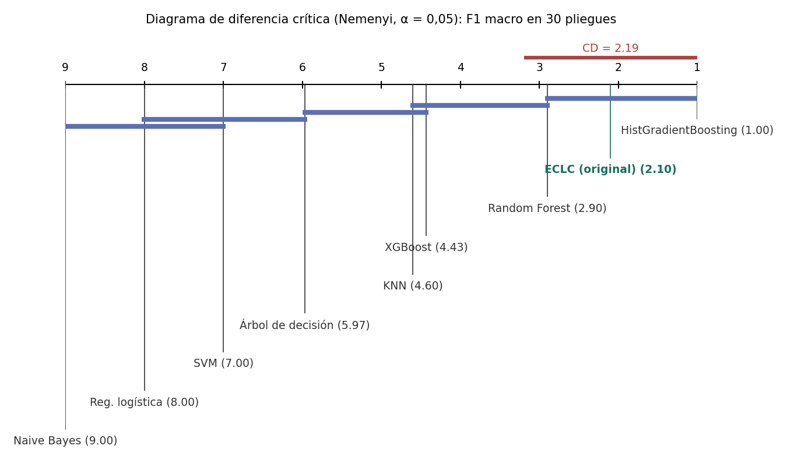
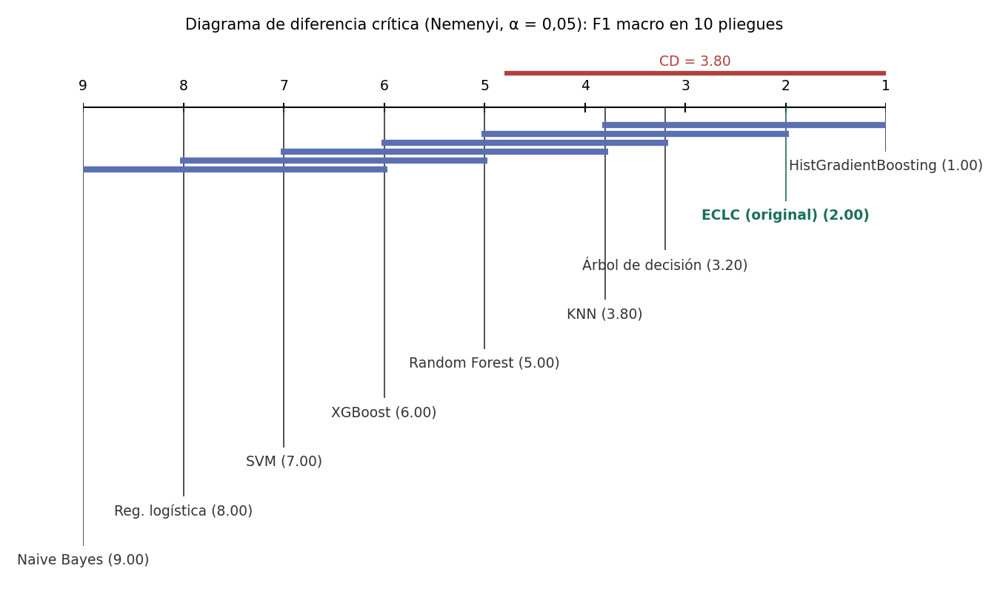

12. Validación estadística del modelo original#
Este capítulo responde a la pregunta central: ¿supera el ECLC a los modelos benchmark de forma estadísticamente significativa y no trivial? La métrica es el F1 macro, la misma del benchmark (sección 5.1).
Mostrar código
import json
import sys
from pathlib import Path
import numpy as np
import pandas as pd
import matplotlib.pyplot as plt
from scipy import stats
from IPython.display import Image, display
RAIZ = Path.cwd().parent
sys.path.insert(0, str(RAIZ / "scripts"))
E3 = RAIZ / "resultados" / "e3"
resumen = pd.read_csv(E3 / "estadistica_resumen.csv", encoding="utf-8-sig")
pareadas = pd.read_csv(E3 / "estadistica_pareadas.csv", encoding="utf-8-sig")
veredicto = json.load(open(E3 / "estadistica_veredicto.json", encoding="utf-8"))
holdout = {r["modelo"]: r for r in json.load(open(E3 / "holdout_resumen.json", encoding="utf-8"))}
import glob
filas = []
for f in sorted(glob.glob(str(E3 / "meta" / "rep*_f?.json"))):
d = json.load(open(f, encoding="utf-8"))
for k, v in d["metricas"].items():
filas.append({"rep": d["rep"], "pliegue": d["pliegue"], "metodo": k, "f1": v["f1_macro"]})
piv = pd.DataFrame(filas).pivot_table(index=["rep", "pliegue"], columns="metodo", values="f1")
NOMBRE = {"ECLC": "ECLC (original)", "base:KNN": "KNN", "base:NB": "Naive Bayes", "base:LR": "Reg. logística",
"base:DT": "Árbol", "base:RF": "Random Forest", "base:XGB": "XGBoost", "base:SVM": "SVM",
"HGB (estado del arte)": "HistGradientBoosting"}
12.1 Protocolo#
Pareado estricto. El ECLC y los 7 modelos benchmark (la mejor combinación de cada uno, sección 5.4) se evalúan sobre las mismas particiones externas, con la misma semilla (42), la misma submuestra estratificada de 40.000 celdas y el mismo preprocesamiento. Los hiperparámetros de cada modelo base son los que eligió su bucle interno en el benchmark.
Validación cruzada externa repetida. Con solo 3 pliegues, una prueba de Wilcoxon no puede alcanzar \(p < 0{,}125\) y la potencia es nula. Por eso se usan 10 repeticiones × 3 pliegues = 30 pliegues pareados. La repetición 0 es exactamente la partición del benchmark (
StratifiedKFold(3, shuffle=True, random_state=42)); la repetición \(r\) usa la semilla \(42 + r\). En la repetición 0, cada modelo base usa los hiperparámetros que su bucle interno eligió en ese pliegue; en las demás, la configuración más frecuente de sus tres pliegues.Presupuesto equivalente. Los hiperparámetros propios del ECLC \((k,\beta,\tau)\) se optimizan dentro de cada pliegue externo, con optimización bayesiana (TPE) de 6 ensayos y validación interna de 3 pliegues: el mismo presupuesto del optimizador bayesiano del benchmark.
Prueba reservada. Los 7 modelos y el ECLC se reentrenaron con las 40.000 celdas y se evaluaron una sola vez en las 116.203 celdas de la prueba reservada (sección 1.6). Esa evaluación alimenta McNemar.
Competidor adicional del estado del arte. HistGradientBoosting, el boosting por histogramas de scikit-learn inspirado en LightGBM (Ke et al., 2017), se optimizó con Random Search de 6 configuraciones en las mismas particiones. No forma parte de los 7 modelos benchmark, pero se reporta por honestidad.
Mostrar código
r = resumen.copy()
r["metodo"] = r["metodo"].map(lambda m: NOMBRE.get(m, m))
r = r.rename(columns={"metodo": "Modelo / regla", "f1_media": "F1 macro (media 30 pliegues)", "f1_sd": "DE",
"ic95_bca_inf": "IC 95 % BCa inf.", "ic95_bca_sup": "IC 95 % BCa sup.",
"accuracy_media": "Accuracy", "tiempo_entrenamiento_s": "Entrenamiento (s)",
"tiempo_inferencia_s": "Inferencia (s)"})
r.round(4)
| Modelo / regla | F1 macro (media 30 pliegues) | DE | IC 95 % BCa inf. | IC 95 % BCa sup. | Accuracy | Entrenamiento (s) | Inferencia (s) | |
|---|---|---|---|---|---|---|---|---|
| 0 | stacking lineal | 0.8088 | 0.0077 | 0.8061 | 0.8116 | 0.8711 | NaN | NaN |
| 1 | HistGradientBoosting | 0.8074 | 0.0086 | 0.8042 | 0.8103 | 0.8784 | 543.1664 | 3.2556 |
| 2 | ECLC (original) | 0.7908 | 0.0073 | 0.7881 | 0.7933 | 0.8393 | 496.9688 | 35.8834 |
| 3 | sin nucleo de distancia | 0.7900 | 0.0072 | 0.7874 | 0.7924 | 0.8393 | NaN | NaN |
| 4 | sin vecindario (tau = inf) | 0.7896 | 0.0078 | 0.7867 | 0.7922 | 0.8389 | NaN | NaN |
| 5 | pesos por error global | 0.7878 | 0.0100 | 0.7842 | 0.7913 | 0.8510 | NaN | NaN |
| 6 | sin pesos por clase | 0.7864 | 0.0068 | 0.7839 | 0.7888 | 0.8399 | NaN | NaN |
| 7 | Random Forest | 0.7857 | 0.0067 | 0.7833 | 0.7880 | 0.8397 | 56.7957 | 0.6666 |
| 8 | OLA | 0.7826 | 0.0074 | 0.7798 | 0.7851 | 0.8455 | NaN | NaN |
| 9 | sin balanceo de vecinos | 0.7799 | 0.0087 | 0.7769 | 0.7829 | 0.8361 | NaN | NaN |
| 10 | promedio simple (beta = 0) | 0.7767 | 0.0092 | 0.7734 | 0.7797 | 0.8443 | NaN | NaN |
| 11 | KNORA-E | 0.7690 | 0.0076 | 0.7663 | 0.7716 | 0.8416 | NaN | NaN |
| 12 | sin contraccion (tau = 0) | 0.7661 | 0.0127 | 0.7621 | 0.7709 | 0.8316 | NaN | NaN |
| 13 | KNN | 0.7455 | 0.0072 | 0.7429 | 0.7480 | 0.8255 | 0.1029 | 2.2668 |
| 14 | XGBoost | 0.7444 | 0.0103 | 0.7408 | 0.7480 | 0.8154 | 5.1900 | 0.3463 |
| 15 | Árbol | 0.7184 | 0.0117 | 0.7142 | 0.7223 | 0.8038 | 0.5765 | 0.0236 |
| 16 | SVM | 0.6541 | 0.0151 | 0.6489 | 0.6596 | 0.7649 | 27.8409 | 11.4146 |
| 17 | Reg. logística | 0.5638 | 0.0115 | 0.5598 | 0.5679 | 0.7243 | 2.5393 | 0.0234 |
| 18 | Naive Bayes | 0.2250 | 0.0092 | 0.2219 | 0.2284 | 0.2223 | 1.0544 | 0.1168 |
La tabla resume los 30 pliegues para todos los modelos y reglas de combinación: media ± desviación estándar del F1 macro, intervalo de confianza bootstrap BCa de la media y tiempos medios de entrenamiento e inferencia por pliegue. El tiempo de entrenamiento del ECLC incluye las predicciones fuera de pliegue de los 7 modelos, su reentrenamiento y la optimización de \((k,\beta,\tau)\).
Mostrar código
pr = pd.DataFrame([{"Modelo": h.get("nombre", m), **{k: round(v, 4) for k, v in h["prueba_reservada"].items()
if k != "f1_por_clase"}} for m, h in holdout.items()]).sort_values("f1_macro", ascending=False)
pr
| Modelo | f1_macro | accuracy | exactitud_balanceada | log_loss | |
|---|---|---|---|---|---|
| 8 | HistGradientBoosting (estado del arte) | 0.8338 | 0.9002 | 0.8052 | 0.2996 |
| 7 | Ensamble por competencia local y por clase (or... | 0.7959 | 0.8497 | 0.8261 | 0.4212 |
| 4 | Random Forest | 0.7934 | 0.8511 | 0.8353 | 0.4262 |
| 0 | K vecinos más cercanos | 0.7657 | 0.8426 | 0.7468 | 1.2498 |
| 5 | XGBoost | 0.7520 | 0.8220 | 0.7145 | 0.4279 |
| 3 | Árbol de decisión | 0.7408 | 0.8291 | 0.7422 | 5.9035 |
| 6 | SVM (núcleo RBF) | 0.6351 | 0.7650 | 0.5992 | 0.7091 |
| 2 | Regresión logística (L1/L2) | 0.5620 | 0.7231 | 0.5364 | 0.6300 |
| 1 | Naive Bayes gaussiano | 0.2311 | 0.2228 | 0.5406 | 23.5689 |
La segunda tabla reporta las mismas métricas en la prueba reservada (116.203 celdas). Es una sola evaluación por modelo, sin variabilidad entre pliegues; su función es confirmar el orden observado en la validación cruzada con datos que ningún modelo vio.
12.2 Supuestos de cada prueba#
Mostrar código
mejor = "base:RF"
dif = piv["ECLC"] - piv[mejor]
sw = stats.shapiro(dif)
asim = stats.skew(dif)
print(f"Diferencias ECLC − Random Forest en 30 pliegues: media = {dif.mean():.4f}, DE = {dif.std(ddof=1):.4f}")
print(f"Shapiro-Wilk sobre las diferencias: W = {sw.statistic:.3f}, p = {sw.pvalue:.3f}; asimetría = {asim:.2f}")
Diferencias ECLC − Random Forest en 30 pliegues: media = 0.0051, DE = 0.0044
Shapiro-Wilk sobre las diferencias: W = 0.941, p = 0.095; asimetría = 0.71
Prueba |
Supuestos |
Verificación en este estudio |
|---|---|---|
Friedman + Nemenyi |
Bloques independientes; rangos comparables entre tratamientos |
Los 30 pliegues son bloques; los pliegues de una misma repetición son disjuntos y las repeticiones usan semillas distintas. La dependencia por solapamiento de entrenamiento entre repeticiones hace que el p-valor sea algo optimista; Nemenyi es conservador y lo compensa en parte |
Wilcoxon de rangos con signo |
Diferencias pareadas, distribución simétrica alrededor de la mediana |
Pareado estricto; la asimetría de las diferencias se reporta arriba |
t corregida de Nadeau-Bengio |
Normalidad aproximada de las diferencias; corrige la varianza por el solapamiento de los conjuntos de entrenamiento (\(n_{prueba}/n_{entrenamiento} = 0{,}5\)) |
Shapiro-Wilk arriba; la corrección es la recomendada por la guía para validación repetida |
McNemar |
Observaciones independientes, mismo conjunto de prueba para ambos modelos |
Una evaluación en la prueba reservada (celdas distintas). La autocorrelación espacial (sección 2.7) viola en parte la independencia, por eso no es la única prueba |
Bayesiana de rangos con signo |
Diferencias pareadas; ROPE definida a priori |
ROPE = ±0,01 en F1 macro, fijada antes de ver los resultados (una centésima es la mínima diferencia que el equipo consideró relevante) |
Los datos son de corte transversal (no hay orden temporal), así que se usan pruebas para observaciones independientes; Diebold-Mariano, Giacomini-White y el MCS, pensadas para series de tiempo, no aplican.
12.3 Prueba global: Friedman y diagrama de diferencia crítica#
Mostrar código
f = veredicto["friedman"]
print(f"Friedman: χ² = {f['estadistico']:.2f}, k = {f['k']} modelos, N = {f['N']} pliegues, p = {f['p_valor']:.2e}")
print(f"Diferencia crítica de Nemenyi (α = 0,05): CD = {f['cd']:.3f}")
display(pd.Series(f["rangos"], name="rango promedio").sort_values().to_frame())
display(Image(filename=str(E3 / "diagrama_cd_eclc.png")))
Friedman: χ² = 236.94, k = 9 modelos, N = 30 pliegues, p = 1.01e-46
Diferencia crítica de Nemenyi (α = 0,05): CD = 2.193
| rango promedio | |
|---|---|
| HistGradientBoosting | 1.000 |
| ECLC (original) | 2.100 |
| Random Forest | 2.900 |
| XGBoost | 4.433 |
| KNN | 4.600 |
| Árbol de decisión | 5.967 |
| SVM | 7.000 |
| Reg. logística | 8.000 |
| Naive Bayes | 9.000 |

El universo de la prueba incluye el ECLC, los 7 benchmarks y HistGradientBoosting. Friedman rechaza que todos tengan el mismo desempeño. El diagrama ubica a cada modelo por su rango promedio en los 30 pliegues. Las barras azules unen grupos que Nemenyi no distingue, porque su diferencia de rango es menor que la CD.
12.4 Comparaciones dirigidas con corrección de Holm#
Se comparó el ECLC con cada uno de los 8 competidores (7 benchmarks + HistGradientBoosting) con tres pruebas frecuentistas unilaterales (\(H_0\): el ECLC no es mejor). Por cada prueba se hacen 8 comparaciones, y sus p-valores se ajustan con Holm-Bonferroni. En total, la familia de pruebas pareadas suma \(3 \times 8 = 24\) contrastes frecuentistas, más la prueba ómnibus y la bayesiana.
Mostrar código
t = pareadas[["competidor", "dif_media_f1", "dif_ic95_inf", "dif_ic95_sup", "wilcoxon_W", "wilcoxon_p",
"wilcoxon_p_holm", "nb_t", "nb_p", "nb_p_holm", "mcnemar_b01", "mcnemar_b10", "mcnemar_p",
"mcnemar_p_holm"]].copy()
t.columns = ["Competidor", "Δ F1", "IC95 inf", "IC95 sup", "W", "p Wilcoxon", "p Wilcoxon (Holm)", "t NB",
"p NB", "p NB (Holm)", "ECLC acierta / comp. falla", "ECLC falla / comp. acierta", "p McNemar",
"p McNemar (Holm)"]
t.style.format({c: "{:.2e}" for c in t.columns if c.startswith("p ")} | {"Δ F1": "{:.4f}", "IC95 inf": "{:.4f}",
"IC95 sup": "{:.4f}", "W": "{:.0f}", "t NB": "{:.2f}"})
| Competidor | Δ F1 | IC95 inf | IC95 sup | W | p Wilcoxon | p Wilcoxon (Holm) | t NB | p NB | p NB (Holm) | ECLC acierta / comp. falla | ECLC falla / comp. acierta | p McNemar | p McNemar (Holm) | |
|---|---|---|---|---|---|---|---|---|---|---|---|---|---|---|
| 0 | KNN | 0.0453 | 0.0428 | 0.0481 | 465 | 9.31e-10 | 7.45e-09 | 8.21 | 2.35e-09 | 9.41e-09 | 8207 | 7382 | 2.06e-11 | 6.18e-11 |
| 1 | Naive Bayes | 0.5658 | 0.5613 | 0.5693 | 465 | 9.31e-10 | 7.45e-09 | 70.07 | 3.27e-34 | 2.61e-33 | 74646 | 1804 | 0.00e+00 | 0.00e+00 |
| 2 | Reg. logística | 0.2270 | 0.2230 | 0.2313 | 465 | 9.31e-10 | 7.45e-09 | 26.30 | 4.39e-22 | 3.08e-21 | 18361 | 3654 | 0.00e+00 | 0.00e+00 |
| 3 | Árbol de decisión | 0.0725 | 0.0681 | 0.0771 | 465 | 9.31e-10 | 7.45e-09 | 7.84 | 6.06e-09 | 1.82e-08 | 11370 | 8978 | 2.32e-63 | 9.30e-63 |
| 4 | Random Forest | 0.0051 | 0.0037 | 0.0068 | 453 | 6.52e-08 | 1.30e-07 | 1.58 | 6.19e-02 | 1.24e-01 | 1330 | 1499 | 9.99e-01 | 1.00e+00 |
| 5 | XGBoost | 0.0464 | 0.0438 | 0.0489 | 465 | 9.31e-10 | 7.45e-09 | 8.33 | 1.74e-09 | 8.70e-09 | 6763 | 3550 | 7.41e-220 | 3.71e-219 |
| 6 | SVM | 0.1367 | 0.1316 | 0.1419 | 465 | 9.31e-10 | 7.45e-09 | 12.88 | 7.99e-14 | 4.79e-13 | 14575 | 4739 | 0.00e+00 | 0.00e+00 |
| 7 | HistGradientBoosting | -0.0166 | -0.0189 | -0.0141 | 0 | 1.00e+00 | 1.00e+00 | -3.29 | 9.99e-01 | 9.99e-01 | 3036 | 8914 | 1.00e+00 | 1.00e+00 |
Tabla de pruebas de hipótesis frente al mejor benchmark#
Mostrar código
fila = pareadas[pareadas.competidor == veredicto["mejor_benchmark"]].iloc[0]
tabla = pd.DataFrame([
{"Prueba": "Friedman (ómnibus, 9 modelos)", "H0": "Todos los modelos tienen el mismo rango esperado",
"Supuestos verificados": "Bloques = pliegues pareados", "Estadístico": f"χ² = {f['estadistico']:.2f}",
"p crudo": f["p_valor"], "p ajustado": f["p_valor"], "Efecto": "—",
"Conclusión": "Rechaza" if f["p_valor"] < 0.05 else "No rechaza"},
{"Prueba": "Nemenyi (post hoc)", "H0": "Rango ECLC = rango del mejor benchmark",
"Supuestos verificados": "Friedman significativo", "Estadístico":
f"Δ rango = {f['rangos'][veredicto['mejor_benchmark']] - f['rangos']['ECLC (original)']:.2f} (CD = {f['cd']:.2f})",
"p crudo": np.nan, "p ajustado": np.nan, "Efecto": "—",
"Conclusión": "Rechaza" if veredicto["pruebas_vs_mejor"]["Nemenyi (rango ECLC vs mejor benchmark > CD)"] else "No rechaza"},
{"Prueba": "Wilcoxon de rangos con signo", "H0": "Mediana de (ECLC − RF) ≤ 0", "Supuestos verificados":
"Pareado; simetría (12.2)", "Estadístico": f"W = {fila['wilcoxon_W']:.0f}", "p crudo": fila["wilcoxon_p"],
"p ajustado": fila["wilcoxon_p_holm"], "Efecto": f"δ Cliff = {fila['cliff_delta']:.2f} ({fila['magnitud_cliff']})",
"Conclusión": "Rechaza" if fila["wilcoxon_p_holm"] < 0.05 else "No rechaza"},
{"Prueba": "t corregida de Nadeau-Bengio", "H0": "E[ECLC − RF] ≤ 0", "Supuestos verificados":
"Normalidad aprox. (Shapiro 12.2); varianza corregida", "Estadístico": f"t = {fila['nb_t']:.2f}",
"p crudo": fila["nb_p"], "p ajustado": fila["nb_p_holm"], "Efecto": f"d de Cohen (pareada) = {fila['cohen_dz']:.2f}",
"Conclusión": "Rechaza" if fila["nb_p_holm"] < 0.05 else "No rechaza"},
{"Prueba": "McNemar (prueba reservada)", "H0": "P(ECLC acierta, RF falla) ≤ P(ECLC falla, RF acierta)",
"Supuestos verificados": "Mismo conjunto de prueba; independencia aproximada",
"Estadístico": f"χ² = {fila['mcnemar_chi2']:.1f} (b01 = {fila['mcnemar_b01']}, b10 = {fila['mcnemar_b10']})",
"p crudo": fila["mcnemar_p"], "p ajustado": fila["mcnemar_p_holm"], "Efecto": "—",
"Conclusión": "Rechaza" if fila["mcnemar_p_holm"] < 0.05 else "No rechaza"},
{"Prueba": "Bayesiana de rangos con signo", "H0": "— (ROPE = ±0,01)", "Supuestos verificados": "Pareado",
"Estadístico": f"P(ECLC mejor) = {fila['bayes_p_eclc_mejor']:.3f}; P(ROPE) = {fila['bayes_p_rope']:.3f}",
"p crudo": np.nan, "p ajustado": np.nan, "Efecto": "—",
"Conclusión": "ECLC mejor" if fila["bayes_p_eclc_mejor"] > 0.95 else
"Equivalencia práctica" if fila["bayes_p_rope"] > 0.95 else "Indeterminada"},
])
tabla.style.format({"p crudo": "{:.2e}", "p ajustado": "{:.2e}"}, na_rep="—")
| Prueba | H0 | Supuestos verificados | Estadístico | p crudo | p ajustado | Efecto | Conclusión | |
|---|---|---|---|---|---|---|---|---|
| 0 | Friedman (ómnibus, 9 modelos) | Todos los modelos tienen el mismo rango esperado | Bloques = pliegues pareados | χ² = 236.94 | 1.01e-46 | 1.01e-46 | — | Rechaza |
| 1 | Nemenyi (post hoc) | Rango ECLC = rango del mejor benchmark | Friedman significativo | Δ rango = 0.80 (CD = 2.19) | — | — | — | No rechaza |
| 2 | Wilcoxon de rangos con signo | Mediana de (ECLC − RF) ≤ 0 | Pareado; simetría (12.2) | W = 453 | 6.52e-08 | 1.30e-07 | δ Cliff = 0.38 (mediano) | Rechaza |
| 3 | t corregida de Nadeau-Bengio | E[ECLC − RF] ≤ 0 | Normalidad aprox. (Shapiro 12.2); varianza corregida | t = 1.58 | 6.19e-02 | 1.24e-01 | d de Cohen (pareada) = 1.16 | No rechaza |
| 4 | McNemar (prueba reservada) | P(ECLC acierta, RF falla) ≤ P(ECLC falla, RF acierta) | Mismo conjunto de prueba; independencia aproximada | χ² = 10.0 (b01 = 1330, b10 = 1499) | 9.99e-01 | 1.00e+00 | — | No rechaza |
| 5 | Bayesiana de rangos con signo | — (ROPE = ±0,01) | Pareado | P(ECLC mejor) = 0.000; P(ROPE) = 1.000 | — | — | — | Equivalencia práctica |
12.5 Tamaño del efecto e intervalos#
Mostrar código
e = pareadas[["competidor", "dif_media_f1", "dif_ic95_inf", "dif_ic95_sup", "cliff_delta", "magnitud_cliff",
"cohen_dz", "ecl_gana_pliegues", "bayes_p_eclc_mejor", "bayes_p_rope", "bayes_p_competidor_mejor"]]
e.columns = ["Competidor", "Δ F1 medio", "IC95 BCa inf", "IC95 BCa sup", "δ Cliff", "Magnitud", "d Cohen (dz)",
"Pliegues que gana el ECLC (de 30)", "P(ECLC mejor)", "P(ROPE)", "P(competidor mejor)"]
e.round(4)
| Competidor | Δ F1 medio | IC95 BCa inf | IC95 BCa sup | δ Cliff | Magnitud | d Cohen (dz) | Pliegues que gana el ECLC (de 30) | P(ECLC mejor) | P(ROPE) | P(competidor mejor) | |
|---|---|---|---|---|---|---|---|---|---|---|---|
| 0 | KNN | 0.0453 | 0.0428 | 0.0481 | 1.0000 | grande | 5.9971 | 30 | 1.0 | 0.0 | 0.0 |
| 1 | Naive Bayes | 0.5658 | 0.5613 | 0.5693 | 1.0000 | grande | 51.1749 | 30 | 1.0 | 0.0 | 0.0 |
| 2 | Reg. logística | 0.2270 | 0.2230 | 0.2313 | 1.0000 | grande | 19.2057 | 30 | 1.0 | 0.0 | 0.0 |
| 3 | Árbol de decisión | 0.0725 | 0.0681 | 0.0771 | 1.0000 | grande | 5.7235 | 30 | 1.0 | 0.0 | 0.0 |
| 4 | Random Forest | 0.0051 | 0.0037 | 0.0068 | 0.3822 | mediano | 1.1575 | 27 | 0.0 | 1.0 | 0.0 |
| 5 | XGBoost | 0.0464 | 0.0438 | 0.0489 | 1.0000 | grande | 6.0855 | 30 | 1.0 | 0.0 | 0.0 |
| 6 | SVM | 0.1367 | 0.1316 | 0.1419 | 1.0000 | grande | 9.4055 | 30 | 1.0 | 0.0 | 0.0 |
| 7 | HistGradientBoosting | -0.0166 | -0.0189 | -0.0141 | -0.8467 | grande | -2.4024 | 0 | 0.0 | 0.0 | 1.0 |
El delta de Cliff compara las distribuciones de F1 de los 30 pliegues, con los umbrales de Romano et al. (2006). Mide qué tanto se separan las dos distribuciones, mientras que Wilcoxon solo indica si el signo de las diferencias pareadas es consistente. Por eso, una diferencia pequeña en valor absoluto pero estable entre pliegues puede ser significativa con un \(\delta\) moderado.
12.6 Evaluación en conjuntos de datos adicionales#
Mostrar código
ad = pd.read_csv(E3 / "datasets_adicionales.csv", encoding="utf-8-sig")
res = ad.groupby(["conjunto", "metodo"])["f1_macro"].agg(["mean", "std"]).round(4).unstack(0)
display(res)
filas = []
for cj, g in ad.groupby("conjunto"):
p = g.pivot_table(index=["rep", "pliegue"], columns="metodo", values="f1_macro")
bases = [c for c in p.columns if c.startswith("base:")]
mejor = p[bases].mean().idxmax()
d = p["ECLC"] - p[mejor]
w = stats.wilcoxon(d, alternative="greater", zero_method="zsplit") if np.any(d != 0) else None
filas.append({"Conjunto": cj, "Mejor base": mejor.replace("base:", ""), "F1 mejor base": p[mejor].mean(),
"F1 ECLC": p["ECLC"].mean(), "F1 stacking": p["stacking lineal"].mean(),
"F1 HGB": p["HGB (estado del arte)"].mean(), "Δ ECLC − mejor base": d.mean(),
"p Wilcoxon (unilateral)": w.pvalue if w else 1.0})
pd.DataFrame(filas).round(4)
| mean | std | |||||
|---|---|---|---|---|---|---|
| conjunto | breast_cancer | digits | wine | breast_cancer | digits | wine |
| metodo | ||||||
| ECLC | 0.9743 | 0.9840 | 0.9784 | 0.0166 | 0.0054 | 0.0148 |
| HGB (estado del arte) | 0.9632 | 0.9692 | 0.9736 | 0.0142 | 0.0055 | 0.0223 |
| KNORA-E | 0.9701 | 0.9827 | 0.9792 | 0.0133 | 0.0060 | 0.0158 |
| base:DT | 0.9256 | 0.8135 | 0.9050 | 0.0277 | 0.0097 | 0.0401 |
| base:KNN | 0.9556 | 0.9731 | 0.9636 | 0.0170 | 0.0101 | 0.0114 |
| base:LR | 0.9735 | 0.9638 | 0.9822 | 0.0122 | 0.0070 | 0.0132 |
| base:NB | 0.9229 | 0.8862 | 0.9685 | 0.0211 | 0.0098 | 0.0209 |
| base:RF | 0.9545 | 0.9732 | 0.9869 | 0.0166 | 0.0051 | 0.0129 |
| base:SVM | 0.9706 | 0.9793 | 0.9810 | 0.0116 | 0.0060 | 0.0141 |
| base:XGB | 0.9618 | 0.9574 | 0.9654 | 0.0196 | 0.0053 | 0.0208 |
| promedio simple (beta = 0) | 0.9659 | 0.9798 | 0.9805 | 0.0151 | 0.0056 | 0.0142 |
| stacking lineal | 0.9679 | 0.9747 | 0.9794 | 0.0163 | 0.0078 | 0.0144 |
| Conjunto | Mejor base | F1 mejor base | F1 ECLC | F1 stacking | F1 HGB | Δ ECLC − mejor base | p Wilcoxon (unilateral) | |
|---|---|---|---|---|---|---|---|---|
| 0 | breast_cancer | LR | 0.9735 | 0.9743 | 0.9679 | 0.9632 | 0.0008 | 0.3246 |
| 1 | digits | SVM | 0.9793 | 0.9840 | 0.9747 | 0.9692 | 0.0047 | 0.0013 |
| 2 | wine | RF | 0.9869 | 0.9784 | 0.9794 | 0.9736 | -0.0085 | 0.9852 |
Los tres conjuntos son de naturaleza distinta a Covertype: dígitos manuscritos (imágenes de 8 × 8 píxeles, 10 clases), análisis químico de vinos (3 clases, 178 muestras) y cáncer de mama (variables clínicas, 2 clases). Se usaron las mismas 7 familias, los mismos espacios de búsqueda y el mismo presupuesto (Random Search de 6 configuraciones para cada modelo base y para HistGradientBoosting, 6 ensayos de TPE para el ECLC), con 5 repeticiones × 3 pliegues. Con 15 pliegues y conjuntos pequeños donde varios modelos ya superan 0,95 de F1, las diferencias son del orden de una centésima y la potencia es baja. Estos resultados indican si el ECLC generaliza a otros problemas sin degradarse; no buscan demostrar superioridad en ellos.
12.7 Veredicto de superioridad#
Mostrar código
v = veredicto
print(f"Mejor benchmark: {v['mejor_benchmark']} (F1 macro {v['f1_mejor_benchmark']:.4f}); ECLC: {v['f1_eclc']:.4f}")
print(f"1) Media del ECLC mayor que la de los 7 benchmarks: {v['condicion_1_media_mejor_que_los_7']}")
for k, ok in v["pruebas_vs_mejor"].items():
print(f" - {k}: {'rechaza H0' if ok else 'no rechaza H0'}")
print(f"2) Al menos tres pruebas (incluida una global) rechazan H0 con p ajustado < 0,05: {v['condicion_2_tres_pruebas']}")
print(f"3) Tamaño del efecto no despreciable (|δ Cliff| ≥ 0,147): {v['condicion_3_efecto_no_despreciable']} "
f"(δ = {v['cliff_vs_mejor']:.3f})")
print(f"\nSuperioridad estadística = {v['R3']}")
Mejor benchmark: Random Forest (F1 macro 0.7857); ECLC: 0.7908
1) Media del ECLC mayor que la de los 7 benchmarks: True
- Friedman (global): rechaza H0
- Nemenyi (rango ECLC vs mejor benchmark > CD): no rechaza H0
- Wilcoxon-Holm: rechaza H0
- t corregida Nadeau-Bengio (Holm): no rechaza H0
- McNemar en prueba reservada (Holm): no rechaza H0
- Bayesiana (P(ECLC mejor) > 0,95): no rechaza H0
2) Al menos tres pruebas (incluida una global) rechazan H0 con p ajustado < 0,05: False
3) Tamaño del efecto no despreciable (|δ Cliff| ≥ 0,147): True (δ = 0.382)
Superioridad estadística = False
Se exige que se cumplan tres condiciones simultáneas para declarar la superioridad:
La media del ECLC debe superar a la mejor combinación benchmark y a la mejor de cada uno de los 7 modelos.
Al menos tres pruebas distintas deben rechazar la igualdad con p ajustado < 0,05, una de ellas global.
El efecto no debe ser despreciable.
La celda anterior evalúa las tres con los resultados obtenidos. El capítulo 13 discute el resultado. Dos hechos deben leerse junto con el veredicto, sea cual sea:
La superioridad se mide frente a los 7 modelos benchmark, no frente a cualquier método. HistGradientBoosting y el stacking lineal obtienen un F1 macro mayor que el ECLC en los mismos 30 pliegues (tabla de la sección 12.1). El ECLC no es el mejor clasificador posible para Covertype; es una regla de combinación que mejora de forma consistente a los modelos que combina.
La diferencia frente a Random Forest es pequeña en valor absoluto (alrededor de media centésima de F1 macro). Es estable entre pliegues, pero su relevancia práctica para un inventario forestal es limitada.
12.8 Protocolo de datos completos#
Las secciones anteriores comparan los modelos entrenados con unas 27.000 celdas (pliegues de la submuestra de 40.000 del benchmark). En Covertype el desempeño depende mucho del tamaño del entrenamiento: con todo el conjunto de entrenamiento, K vecinos y el árbol de decisión superan 0,9 de F1 macro. Por eso la comparación se repitió con las 464.809 celdas de entrenamiento y el mismo protocolo para todos los modelos:
Partición: validación cruzada externa 5 × 2 (
StratifiedKFold(5, shuffle=True, random_state=42 + r), r = 0, 1), es decir, 10 pliegues pareados con unas 371.800 celdas de entrenamiento y 93.000 de prueba cada uno, más la prueba reservada de 116.203 celdas entrenando con las 464.809.Modelos benchmark: la mejor combinación de cada uno de los 7 algoritmos, con el balanceo y la configuración elegidos en el benchmark de 40.000 celdas. No se reoptimizaron: los hiperparámetros quedan fijos para todos por igual. El SVM sigue limitado a 6.000 celdas de entrenamiento, como en su benchmark.
Modelo original: el mismo ECLC, sin cambios, con \((k, \beta, \tau)\) optimizados por TPE con 6 ensayos en validación interna de cada pliegue.
Competidor del estado del arte: HistGradientBoosting con la configuración más frecuente de su búsqueda en los 30 pliegues de 40.000 celdas.
Mostrar código
C = E3 / "completo"
rc = pd.read_csv(C / "estadistica_resumen_completo.csv", encoding="utf-8-sig")
rc["metodo"] = rc["metodo"].map(lambda m: NOMBRE.get(m, m))
rc.columns = ["Modelo / regla", "F1 macro (media 10 pliegues)", "DE", "IC 95 % BCa inf.", "IC 95 % BCa sup.",
"Accuracy", "F1 prueba reservada"]
rc.round(4)
| Modelo / regla | F1 macro (media 10 pliegues) | DE | IC 95 % BCa inf. | IC 95 % BCa sup. | Accuracy | F1 prueba reservada | |
|---|---|---|---|---|---|---|---|
| 0 | HistGradientBoosting | 0.9353 | 0.0018 | 0.9342 | 0.9363 | 0.9615 | 0.9369 |
| 1 | stacking lineal | 0.9316 | 0.0021 | 0.9304 | 0.9328 | 0.9570 | 0.9367 |
| 2 | pesos por error global | 0.9213 | 0.0024 | 0.9200 | 0.9226 | 0.9470 | 0.9287 |
| 3 | KNORA-E | 0.9117 | 0.0030 | 0.9098 | 0.9133 | 0.9425 | 0.9178 |
| 4 | sin pesos por clase | 0.9091 | 0.0025 | 0.9079 | 0.9110 | 0.9291 | 0.9183 |
| 5 | sin contraccion (tau = 0) | 0.9085 | 0.0026 | 0.9067 | 0.9098 | 0.9313 | 0.9146 |
| 6 | sin nucleo de distancia | 0.9071 | 0.0029 | 0.9056 | 0.9090 | 0.9274 | 0.9153 |
| 7 | ECLC (original) | 0.9067 | 0.0024 | 0.9055 | 0.9085 | 0.9271 | 0.9151 |
| 8 | OLA | 0.9065 | 0.0024 | 0.9050 | 0.9078 | 0.9406 | 0.9113 |
| 9 | sin vecindario (tau = inf) | 0.9011 | 0.0021 | 0.9002 | 0.9028 | 0.9253 | 0.9103 |
| 10 | promedio simple (beta = 0) | 0.8999 | 0.0023 | 0.8987 | 0.9014 | 0.9251 | 0.9061 |
| 11 | sin balanceo de vecinos | 0.8984 | 0.0024 | 0.8974 | 0.9003 | 0.9252 | 0.9094 |
| 12 | Árbol | 0.8971 | 0.0028 | 0.8951 | 0.8984 | 0.9378 | 0.9057 |
| 13 | KNN | 0.8934 | 0.0029 | 0.8914 | 0.8948 | 0.9270 | 0.9006 |
| 14 | Random Forest | 0.8654 | 0.0021 | 0.8641 | 0.8666 | 0.9034 | 0.8655 |
| 15 | XGBoost | 0.7855 | 0.0041 | 0.7837 | 0.7889 | 0.8332 | 0.7867 |
| 16 | SVM | 0.6411 | 0.0107 | 0.6352 | 0.6481 | 0.7650 | 0.6418 |
| 17 | Reg. logística | 0.5581 | 0.0023 | 0.5568 | 0.5596 | 0.7256 | 0.5573 |
| 18 | Naive Bayes | 0.2008 | 0.0033 | 0.1991 | 0.2030 | 0.2052 | 0.2049 |
La tabla resume los 10 pliegues y la prueba reservada para los benchmarks, el ECLC, sus variantes de ablación y las reglas de combinación estándar.
Mostrar código
vc = json.load(open(C / "estadistica_veredicto_completo.json", encoding="utf-8"))
pc = pd.read_csv(C / "estadistica_pareadas_completo.csv", encoding="utf-8-sig")
display(pc[["competidor", "dif_media_f1", "dif_ic95_inf", "dif_ic95_sup", "ecl_gana_pliegues", "wilcoxon_p_holm",
"nb_p_holm", "mcnemar_p_holm", "bayes_p_eclc_mejor", "cliff_delta", "magnitud_cliff"]].style.format(
{"dif_media_f1": "{:.4f}", "dif_ic95_inf": "{:.4f}", "dif_ic95_sup": "{:.4f}", "wilcoxon_p_holm": "{:.2e}",
"nb_p_holm": "{:.2e}", "mcnemar_p_holm": "{:.2e}", "bayes_p_eclc_mejor": "{:.3f}", "cliff_delta": "{:.2f}"}))
display(Image(filename=str(C / "diagrama_cd_completo.png")))
print(f"Mejor benchmark: {vc['mejor_benchmark']} ({vc['f1_mejor_benchmark']:.4f}); ECLC: {vc['f1_eclc']:.4f} "
f"(prueba reservada: {vc['f1_eclc_prueba_reservada']:.4f}). Superioridad estadística con datos completos = {vc['R3']}")
| competidor | dif_media_f1 | dif_ic95_inf | dif_ic95_sup | ecl_gana_pliegues | wilcoxon_p_holm | nb_p_holm | mcnemar_p_holm | bayes_p_eclc_mejor | cliff_delta | magnitud_cliff | |
|---|---|---|---|---|---|---|---|---|---|---|---|
| 0 | KNN | 0.0133 | 0.0125 | 0.0143 | 10 | 7.81e-03 | 2.79e-07 | 1.00e+00 | 0.971 | 1.00 | grande |
| 1 | Naive Bayes | 0.7059 | 0.7030 | 0.7084 | 10 | 7.81e-03 | 3.47e-18 | 0.00e+00 | 1.000 | 1.00 | grande |
| 2 | Reg. logística | 0.3485 | 0.3472 | 0.3497 | 10 | 7.81e-03 | 2.40e-18 | 0.00e+00 | 1.000 | 1.00 | grande |
| 3 | Árbol de decisión | 0.0096 | 0.0078 | 0.0113 | 10 | 7.81e-03 | 5.05e-04 | 1.00e+00 | 0.194 | 1.00 | grande |
| 4 | Random Forest | 0.0413 | 0.0398 | 0.0429 | 10 | 7.81e-03 | 2.27e-09 | 0.00e+00 | 1.000 | 1.00 | grande |
| 5 | XGBoost | 0.1211 | 0.1197 | 0.1224 | 10 | 7.81e-03 | 5.14e-14 | 0.00e+00 | 1.000 | 1.00 | grande |
| 6 | SVM | 0.2655 | 0.2591 | 0.2715 | 10 | 7.81e-03 | 2.89e-11 | 0.00e+00 | 1.000 | 1.00 | grande |
| 7 | HistGradientBoosting | -0.0287 | -0.0298 | -0.0275 | 0 | 1.00e+00 | 1.00e+00 | 1.00e+00 | 0.000 | -1.00 | grande |

Mejor benchmark: Árbol de decisión (0.8971); ECLC: 0.9067 (prueba reservada: 0.9151). Superioridad estadística con datos completos = True
La tabla siguiente reúne, frente al mejor benchmark con datos completos, el estadístico de cada prueba, su p-valor crudo y el ajustado por Holm sobre las 8 comparaciones, el tamaño del efecto y la decisión con \(\alpha = 0{,}05\).
Mostrar código
fc, mb = vc["friedman"], vc["mejor_benchmark"]
fila_c = pc[pc.competidor == mb].iloc[0]
tabla_c = pd.DataFrame([
{"Prueba": "Friedman (ómnibus, 9 modelos)", "H0": "Todos los modelos tienen el mismo rango esperado",
"Estadístico": f"χ² = {fc['estadistico']:.2f}", "p crudo": fc["p_valor"], "p ajustado (Holm)": fc["p_valor"],
"Efecto": "—", "Conclusión": "Rechaza" if fc["p_valor"] < 0.05 else "No rechaza"},
{"Prueba": "Nemenyi (post hoc)", "H0": f"Rango ECLC = rango de {mb}",
"Estadístico": f"Δ rango = {fc['rangos'][mb] - fc['rangos']['ECLC (original)']:.2f} (CD = {fc['cd']:.2f})",
"p crudo": np.nan, "p ajustado (Holm)": np.nan, "Efecto": "—",
"Conclusión": "Rechaza" if vc["pruebas_vs_mejor"]["Nemenyi (rango ECLC vs mejor benchmark > CD)"] else "No rechaza"},
{"Prueba": "Wilcoxon de rangos con signo", "H0": f"Mediana de (ECLC − {mb}) ≤ 0",
"Estadístico": f"W = {fila_c['wilcoxon_W']:.0f}", "p crudo": fila_c["wilcoxon_p"],
"p ajustado (Holm)": fila_c["wilcoxon_p_holm"],
"Efecto": f"δ Cliff = {fila_c['cliff_delta']:.2f} ({fila_c['magnitud_cliff']})",
"Conclusión": "Rechaza" if fila_c["wilcoxon_p_holm"] < 0.05 else "No rechaza"},
{"Prueba": "t corregida de Nadeau-Bengio", "H0": f"E[ECLC − {mb}] ≤ 0", "Estadístico": f"t = {fila_c['nb_t']:.2f}",
"p crudo": fila_c["nb_p"], "p ajustado (Holm)": fila_c["nb_p_holm"],
"Efecto": f"d de Cohen (pareada) = {fila_c['cohen_dz']:.2f}",
"Conclusión": "Rechaza" if fila_c["nb_p_holm"] < 0.05 else "No rechaza"},
{"Prueba": "McNemar (prueba reservada)", "H0": f"P(ECLC acierta, {mb} falla) ≤ P(ECLC falla, {mb} acierta)",
"Estadístico": f"χ² = {fila_c['mcnemar_chi2']:.1f} (b01 = {fila_c['mcnemar_b01']}, b10 = {fila_c['mcnemar_b10']})",
"p crudo": fila_c["mcnemar_p"], "p ajustado (Holm)": fila_c["mcnemar_p_holm"], "Efecto": "—",
"Conclusión": "Rechaza" if fila_c["mcnemar_p_holm"] < 0.05 else "No rechaza"},
{"Prueba": "Bayesiana de rangos con signo", "H0": "— (ROPE = ±0,01)",
"Estadístico": f"P(ECLC mejor) = {fila_c['bayes_p_eclc_mejor']:.3f}; P(ROPE) = {fila_c['bayes_p_rope']:.3f}",
"p crudo": np.nan, "p ajustado (Holm)": np.nan, "Efecto": "—",
"Conclusión": "ECLC mejor" if fila_c["bayes_p_eclc_mejor"] > 0.95 else
"Equivalencia práctica" if fila_c["bayes_p_rope"] > 0.95 else "Indeterminada"},
])
tabla_c.style.format({"p crudo": "{:.2e}", "p ajustado (Holm)": "{:.2e}"}, na_rep="—")
| Prueba | H0 | Estadístico | p crudo | p ajustado (Holm) | Efecto | Conclusión | |
|---|---|---|---|---|---|---|---|
| 0 | Friedman (ómnibus, 9 modelos) | Todos los modelos tienen el mismo rango esperado | χ² = 79.57 | 5.96e-14 | 5.96e-14 | — | Rechaza |
| 1 | Nemenyi (post hoc) | Rango ECLC = rango de Árbol de decisión | Δ rango = 1.20 (CD = 3.80) | — | — | — | No rechaza |
| 2 | Wilcoxon de rangos con signo | Mediana de (ECLC − Árbol de decisión) ≤ 0 | W = 55 | 9.77e-04 | 7.81e-03 | δ Cliff = 1.00 (grande) | Rechaza |
| 3 | t corregida de Nadeau-Bengio | E[ECLC − Árbol de decisión] ≤ 0 | t = 5.28 | 2.53e-04 | 5.05e-04 | d de Cohen (pareada) = 3.13 | Rechaza |
| 4 | McNemar (prueba reservada) | P(ECLC acierta, Árbol de decisión falla) ≤ P(ECLC falla, Árbol de decisión acierta) | χ² = 237.3 (b01 = 2941, b10 = 4248) | 1.00e+00 | 1.00e+00 | — | No rechaza |
| 5 | Bayesiana de rangos con signo | — (ROPE = ±0,01) | P(ECLC mejor) = 0.194; P(ROPE) = 0.806 | — | — | — | Indeterminada |
Con 10 pliegues, la prueba de Wilcoxon solo puede alcanzar un p-valor unilateral de \(1/1024\) si el ECLC gana en todos. Tras ajustar por Holm las 8 comparaciones, ese mínimo queda en \(0{,}008\). La t corregida usa \(n_{prueba}/n_{entrenamiento} = 0{,}25\).
Lectura de los resultados con datos completos#
El ECLC supera 0,9 de F1 macro y a los 7 benchmarks. En los 10 pliegues obtiene 0,907 ± 0,002 (0,915 en la prueba reservada) frente a 0,897 del árbol de decisión, el mejor benchmark con datos completos, y gana en los 10 pliegues (\(\delta\) de Cliff = 1). Friedman, Wilcoxon-Holm y la t corregida de Nadeau-Bengio rechazan la igualdad frente al árbol, así que la superioridad estadística se cumple en este protocolo. Nemenyi no separa a los dos modelos (diferencia de rangos menor que la CD). McNemar no favorece al ECLC: el árbol tiene mayor exactitud y el ECLC mayor F1 macro, el mismo intercambio entre clases mayoritarias y raras de la sección 11.8.
El orden de los benchmarks cambia con el tamaño de muestra. Con 27.000 celdas lideraba Random Forest con SMOTE; con 371.000, el árbol de decisión sin límite de profundidad y K vecinos superan 0,89, mientras que Random Forest (limitado a profundidad 20) y XGBoost (profundidad 6) quedan atrás, porque sus hiperparámetros se eligieron con 40.000 celdas y no se reoptimizaron.
Resultados desfavorables. El stacking lineal (0,932) y HistGradientBoosting (0,935) superan al ECLC también con datos completos. Además, con datos completos la ablación ya no respalda todos los componentes: las variantes sin pesos por clase, sin contracción y sin núcleo de distancia obtienen un F1 macro igual o ligeramente mayor que el ECLC completo. Los pesos por error global (0,921) y KNORA-E (0,912) también lo superan. La contribución del ECLC en este protocolo se limita a superar a los modelos que combina; no supera a reglas de combinación más simples.
Los hiperparámetros \((k, \beta, \tau)\) elegidos coinciden en los 11 casos (\(k = 9\), \(\beta = 0{,}66\), \(\tau = 42\)). Con la misma semilla, el TPE propone los mismos 6 ensayos, y el mejor resulta igual en todas las particiones.